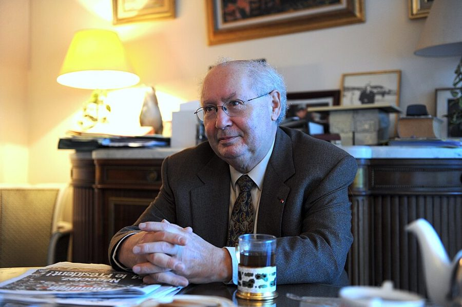
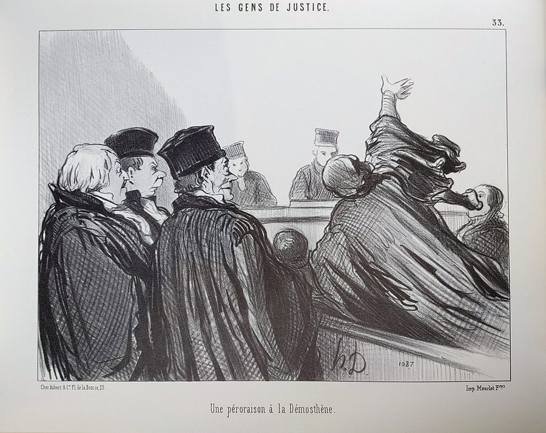
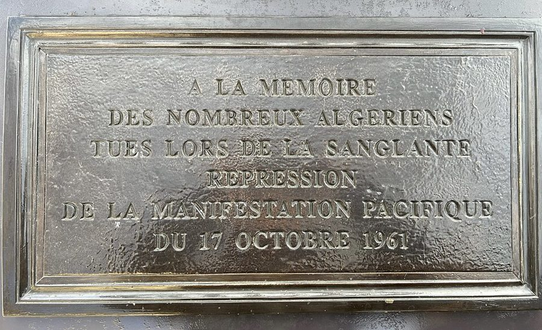

这一篇在做什么
1998 年 4 月 1 日，波尔多。前维希政府的地方高官 Papon（Maurice Papon）受审半年，这一夜陪审团闭门评议，各国记者挤在法院对面的咖啡馆里等判决。作者从这间咖啡馆写起，中间插进一大段：Papon 在占领时期签过什么，战后怎样官运亨通，这场审判到底在审什么。读的时候抓两条线：一条是咖啡馆里的通宵，热闹甚至滑稽；一条是作者的论证，围绕法国人心目中的「国家」和它的文件柜。最后一节回到巴黎家里，儿子问了一个问题。
波尔多的司法宫（Palais de Justice），1846 年落成，2015 年摄。Papon 案就在这里的吉伦特省重罪法庭开庭；书里说审判最后一天，各国记者挤满了它门前的小广场。CéCédille，CC BY-SA 4.0，维基共享资源
读之前：这篇的来历
这是全书唯一一篇长篇法庭报道，写 1997 年 10 月到 1998 年 4 月在波尔多开庭的 Papon 案，宣判那一夜作者守在现场，最早刊在《纽约客》1998 年 4 月 27 日与 5 月 4 日的合刊上。它和别的篇不一样，几乎没有家里的小事，通篇是政治和历史。作者在第 1 篇里交代过为什么把它收进书里：占领和合作至今是法国生活中心的一个黑洞。这时一家人在巴黎住到第三年，儿子三岁半，最后一节才出场。§5 写到了 1999 年 10 月 Papon 出逃，可见收进书里时作者补写过。它在第二部分「远方的错误」（Distant Errors），前一篇是第二篇圣诞日记，后一篇回到 1997 年夏天埃菲尔铁塔的一场小风波。
一个只在文件上签字、从没亲手抓过人的高级文官，算不算杀人的共谋？一场法国式的审判，能不能把纸上的名字和真实的人对上号？
读的时候带着这几个问题。不用先找答案，读完回来对照「检查一下理解」。
作者为什么从咖啡馆里记者的吃喝写起，而不是从法庭写起？这种热闹和审判的分量放在一起，你读着是什么感觉？§1 §4
作者说在波尔多受审的不是维希，而是另一样东西。是什么？他举的传真色带的例子和它有什么关系？§2
判了十年，很多人说太轻。作者站在哪一边？他为什么说回到巴黎再看，判决反而显得可以接受？§4
这一篇的路线
全篇五节，像一个夹心：§1 和 §4 是宣判前后那一夜，地点几乎不动，就在法院对面的咖啡馆；夹在中间的 §2、§3 是一篇长论文，讲历史、讲法国的「国家」、讲辩方怎样在文件堆里周旋。读译本最容易在 §2 迷路：它从维希讲到 Papon 的履历和庭上众人，再一路抽象到「纸上的宇宙」，篇幅占全篇四成多。§4 回到咖啡馆，判决出来，作者才把论证收拢。§5 只有两段，跳回巴黎的家，用儿子的一句话和 Papon 出逃，把刚收好的结论又撬开一道缝。留意首尾：全篇第一句说波尔多是法国去认输的地方，§4 倒数第二段有一句回应它。
现场：咖啡馆和法庭
论证：国家和文件
§1
§2
§3
§4
§5
首尾呼应
法国去认输的城
记者涌进广场
念最后陈述的译稿
维希和档案卡
Papon 的履历
庭上众人
「国家」和色带
被地图盖住的森林
一缸头发
1961 年、《黑皮书》
通宵等判决
父子俩的分寸
张开的十指
这次没人认输
回到家：孩子们出来了吗
本站示意图。橙点是咖啡馆和法庭的现场，蓝点是作者的论证，最后一个点是巴黎的家；折线是阅读顺序，横虚线是原书的分隔，右边的弧线连起首尾呼应的两处。§2 几乎整节都在论证这一侧。 作者落在哪： 作者认为受审的是法国人对「国家」和文件的崇拜：签字的人以为自己只是在处理纸。判十年、不认定共谋谋杀，他认为判得对，从此「按程序办事」和「奉命行事」一样不能脱罪。这一次没有人认输。结尾儿子一问、Papon 一逃，作者没有再下判断。
分节地图
原书这一篇有四处分隔，分成五节。每一节的粗体是读译本时认得出的场面；下面的斜体是英文这一节开头的几个词，打开电子书搜它就能跳到那里。读完一节打个勾。
波尔多，咖啡馆，英国记者念译稿约 1200 词 Bordeaux is the town where France … 先交代波尔多，再进咖啡馆。留意记者们怎样把 Papon 的陈述念得支离破碎。 维希、档案卡、传真色带、一缸头发约 2500 词 When the French government in Bordeaux … 全篇的论证都在这里。抓住「纸上的宇宙」这个比方，看它怎样一层层加码。 1961 年塞纳河上的屠杀，《黑皮书》约 400 词 One of the shocks the trial offered … 审判怎样被拉进当下的左右之争。最后一个问句把「纸」推到了诗和宣言上。 咖啡馆通宵，张开十指的女人约 1500 词 After the jury retired, the journalists … 回到现场等判决。判决之后作者才亮出自己的看法，留意他怎样评价这个十年。 儿子的问题，Papon 逃往瑞士约 200 词 I had explained to Luke, over … 两段收尾。想想作者为什么不在 §4 的结论上停下。
背景：作者默认你知道的事
按在书里出现的顺序排，标题前是节号。
§1 波尔多：法国政府撤退的地方波尔多在法国西南，是吉伦特省（Gironde）的首府，葡萄酒贸易的中心。书里数了三次政府南逃：1870 年普法战争，巴黎被围，政府的代表团后来迁到这里；1914 年 9 月德军逼近巴黎，政府又迁来；1940 年 6 月德军进攻，政府逃到波尔多，总理雷诺（Paul Reynaud）在这里辞职，接任的贝当（Philippe Pétain）随即求和。停战后政府迁到温泉小城维希（Vichy），所以叫维希政府。书里提到的 Chapon Fin 是 1825 年开业的老饭馆，2025 年过了两百年，至今还在营业。
Liebling A. J. Liebling 《纽约客》的老牌记者，二战时报道过法国。书里引他回忆 1940 年 6 月的波尔多：空气里一股死亡的气息，富人在名馆子里一脸「不用再怕了」的解脱。
§1 这场审判：审什么，判了什么Papon（1910–2007）1942 到 1944 年任吉伦特省政府秘书长，是省长之下的第二号文官。罪名是「反人类罪共谋」（complicité de crimes contre l’humanité），涉及从波尔多押往巴黎郊外德朗西、再转往奥斯维辛的一千五百多名犹太人。1997 年 10 月 8 日在吉伦特省重罪法庭开庭，书里说由三名法官和九名陪审员审理。1998 年 4 月 2 日上午宣判：十年徒刑，认定他共谋非法逮捕和拘禁，不认定共谋谋杀。书里 §2 说检方要求终身监禁；当时的报道是检方求刑二十年。
§1 记者嘴里的英美典故作者写咖啡馆这一夜，处处拿英美的东西打比方。O.J. 指 1995 年美国的辛普森（O. J. Simpson）案，全程电视直播，一副沾血的手套是关键证物。纽伦堡审判是 1945–1946 年盟国审判纳粹首要战犯。美国记者那句粗话，多半是指 1998 年 1 月起占满美国报纸的克林顿—莱温斯基丑闻。§4 里宣判前夜传来的 Paula Jones 案，是阿肯色州一位前州政府雇员告克林顿性骚扰的民事诉讼；Larry King 的节目上斗嘴的两人，James Carville 是克林顿的竞选军师，Susan Carpenter-McMillan 替 Paula Jones 发声。
Swifty Lazar Irving “Swifty” Lazar 好莱坞的大牌经纪人，几十年里每年奥斯卡之夜办明星云集的派对。§1 说咖啡馆的气氛像他的派对加上纽伦堡审判。
Michael Frayn Michael Frayn 英国剧作家、小说家，以喜剧 Noises Off 出名。英国记者说「德国人明显缺席」听着像他的戏名。
§1 Klarsfeld 父子Serge Klarsfeld 1935 年生于布加勒斯特，书里说他父亲死在奥斯维辛。他和德国出生的妻子 Beate 几十年追查纳粹罪犯和维希官员，书里说 Barbie 和 Touvier 受审，他们都出过力。Barbie 是里昂的盖世太保头目，1987 年在里昂被判终身监禁；Touvier 是维希民兵里昂地区情报处的头目，1994 年被判终身监禁，是第一个因反人类罪被定罪的法国人。Klarsfeld 夫妇 1979 年创立的「法国被遣送犹太人子女协会」是 Papon 案的民事当事方之一，儿子 Arno 是这个协会的律师。

Serge Klarsfeld 2010 年在巴黎家中，比这一篇晚十二年。Nicolas Richoffer，CC BY-SA 4.0，维基共享资源 §1 最后陈述里的加缪和伦勃朗加缪（Albert Camus，1913–1960）是作家，占领时期参加抵抗运动，在地下报纸《战斗报》（Combat）工作，1944 年 8 月巴黎解放后任主编，1957 年获诺贝尔文学奖，1960 年死于车祸。Papon 说加缪是他亡妻最喜欢的作家。§4 末尾作者又提到加缪，说他到死都梦想战胜「抽象」：加缪战后反复写，人不该为了抽象的观念去杀人。伦勃朗 1635 年画过《以撒献祭》：亚伯拉罕要按神的命令杀死儿子以撒，天使抓住了他拿刀的手。Papon 说的「拦住那只手」的光，指的就是这个故事。
伦勃朗《以撒献祭》，1635 年。天使抓住亚伯拉罕的手，刀从手里掉了下来。Papon 在最后陈述里提到伦勃朗画中的这一幕。Rembrandt，公有领域，维基共享资源
§2 维希、犹太人身份法和德朗西维希政权由一战英雄贝当元帅领导。第一部《犹太人身份法》（Statut des Juifs）1940 年 10 月颁布，把犹太人排除出公职和许多职业，书里强调这是在德国人提出要求之前（书里说是那年夏天）。1942 年起，法国警察配合德国人大规模抓捕犹太人。巴黎东北郊的德朗西（Drancy）是中转营，押运列车从这里开往奥斯维辛等灭绝营。书里说法国的犹太人约四分之一被送进死亡营，并引 Paxton 的看法：这个比例不能拿来开脱，法国犹太人最融入社会，没有省府里的卡片和档案，德国人很难找到他们。
Paxton Robert Paxton 美国历史学家，1972 年出版《维希法国》，用德国档案说明维希的合作出于主动；1981 年和 Michael Marrus 合写《维希法国与犹太人》。1997 年 10 月底在 Papon 案出庭作证，书里说他是研究维希的头号史家。
德朗西纪念地陈列的一节货运车厢，车身上画着大卫星。照片上的日期是 2006 年。§2 里辩方说 Papon 曾要求把运牲口的车皮换成客车。Jpcuvelier，CC BY-SA 4.0，维基共享资源
§2 从《鸭鸣报》到开庭Papon 战后一路升迁：1958 年 3 月到 1967 年 1 月任巴黎警察局长；1978 到 1981 年，在德斯坦（Valéry Giscard d’Estaing）总统任内的巴尔政府当预算部长。1981 年 5 月 6 日，总统大选两轮之间，讽刺周报《鸭鸣报》（Le Canard enchaîné）刊出他在占领时期签署的文件。此后官司拖了十几年：1983 年被控反人类罪，1987 年最高法院以程序问题撤销了大部分预审，1988 年、1992 年两次重新立案，1995 年 8 月预审结束、12 月检方请求移送重罪法庭，1996 年 9 月 18 日才裁定移送。书里说「直到 1995 年才正式起诉」，大概指的是 1995 年检方请求移送这一步。
密特朗 François Mitterrand 1981–1995 年任法国总统，社会党人。1994 年出版的一本传记披露，他年轻时在维希政权里任过职，和维希警察总长 René Bousquet 交往多年。书里说他想尽办法拖延审判，「尤其对他自己不利」是作者的推测。
§2 庭上的人和杜米埃法国的重罪审判给自由发问和长篇发言留了很多时间，书里说这让审判带上了「文学气」。辩护律师 Varaut 写过王尔德受审和耶稣受审的书；替辩方作证的历史学家 Amouroux 写过多卷本的占领时期法国人史。法国律师出庭至今穿黑袍、戴白领巾，作者说他们像杜米埃（Honoré Daumier）的画：杜米埃 1845 到 1848 年在讽刺报《喧闹报》（Le Charivari）上连载石版画组《司法界众生相》（Les Gens de justice），专画夸夸其谈的律师。Arno 交往过的模特 Carla Bruni，后来成了歌手，2008 年嫁给萨科齐总统。

杜米埃《司法界众生相》第 33 幅，题为「一段狄摩西尼式的结案陈词」，1845–1848 年间。§2 说法国律师的黑袍白领巾让他们永远像杜米埃画里的人。Honoré Daumier，公有领域，维基共享资源 §2 法国人说的「国家」法国的高级文官（hauts fonctionnaires）多出自几所精英学校，在部委、省府、国企之间流转，常常直接入阁；书里说当时国民议会四成多的议员是停职的公务员。作者说 l’État 在法国有美国宪法那样的地位，也像英国王室直到不久前那样，还引了《解放报》（Libération）创办人之一 Serge July 的说法：「公职的宗教」。作者举的 France Télécom 店员的例子，第 8 篇圣诞日记里已经出现过：作者那台国营传真机的色带，只能去官方营业厅买。
§3 1961 年 10 月 17 日，和右派的反击1961 年，阿尔及利亚独立战争接近尾声。巴黎警察局长 Papon 对在巴黎的阿尔及利亚人实行宵禁。10 月 17 日，阿尔及利亚民族解放阵线（FLN）号召和平游行，遭到警察暴力镇压，不少人被扔进塞纳河。死亡人数至今说法不一：当时的官方数字只有几人；1998 年政府委托的 Mandelkern 报告只说在「几十人」的量级，1999 年公布的 Géronimi 报告估计 17、18 日两天约 48 人；历史学家的估计更高，Jean-Luc Einaudi 认为至少两百人，书里写约两百人。审判期间右派的回应之一，是 1997 年 11 月出版的《共产主义黑皮书》（Le Livre noir du communisme），由 Stéphane Courtois 等人合著。
Séguin Philippe Séguin 戴高乐派政党保卫共和联盟（RPR）的主席。1997 年 10 月 19 日，审判开庭不久，他在电视上说这场审判成了审判戴高乐、审判法国的借口。
词与短语
只收中文译文多半传不出原味的地方：熟词生义、反话和挖苦、典故、夹在英文里的法文。读译本读到觉得别扭、不知道作者在说什么时，来这里找那一节的；斜体小字是原句里的几个英文词，在电子书里搜它就能找到原文。
§1 波尔多，咖啡馆，英国记者念译稿
give up
… the town where France goes to give up.
认输、放弃抵抗
三次战争，政府三次退到波尔多。记住这个词：§4 倒数第二段「这一次没有人认输」跟它首尾呼应。
la France profonde
… cosmopolitan Paris back to la France profonde.
（法文）深处的法国
指远离巴黎的外省、乡土、保守的法国。这个说法本身带着法国人自己的感情色彩，英文没有现成的对应，作者就直接用法文。
trench coat—and—train station
… a trench coat—and—train station, 1940s kind …
风衣加火车站那种（四十年代的城）
作者自造的复合形容词，让人想到四十年代黑白电影里穿风衣的人在月台上告别、接头。不是在说城里真有多少风衣和车站。
O.J. trial
… a kind of O.J. trial, without television …
辛普森案那样的审判
1995 年美国的辛普森案全国天天追（见「背景」）。作者说 Papon 案是「没有电视、也没有手套的辛普森案」：全国人都在看。
became an occupation
… the media became an occupation; what …
「入侵」升级成了「占领」
接上一段的 invaded again（波尔多又被入侵）。occupation 既是「占据」，也是这场审判要审的那段历史的名字：德国占领时期（the occupation）。一个不太轻松的玩笑。
Swifty Lazar’s Oscar party
… a combination of Swifty Lazar’s Oscar party …
Swifty Lazar 的奥斯卡派对
好莱坞的明星派对配上纽伦堡审判：一边是香槟，一边是反人类罪。咖啡馆那一夜的气氛就是这种反差（见「背景」）。
eternal hair
… the secret of eternal hair: It piles …
永不脱落的头发
笑法国记者头发浓密、越堆越高（It piles up），和英国摇滚吉他手一样。纯属玩笑，下面接着轮到美国人和英国人。
longing for Vietnam
… seem to be still longing for Vietnam.
还在怀念越战（那段采访岁月）
不是想去越南，是说美国记者还活在越战报道的年代：满脸疲惫，走法院台阶也像在直升机旋翼下猫腰。
dog tags
… weighed down by invisible dog tags.
士兵身份牌
美军士兵挂在脖子上的金属牌，跟狗无关。接着上一条的越战玩笑。
between blow jobs
… the paper only “between blow jobs,” as …
夹在克林顿性丑闻的报道中间
字面是粗话。1998 年 1 月起，克林顿和白宫实习生的丑闻占满了美国报纸；这位美国记者说得很苦（bitterly）：Papon 案的稿子只能塞进丑闻报道的缝里。
procès Papon
… stories about the procès Papon would …
（法文）Papon 案
procès 是审判、诉讼，这是法国报纸对这场审判的通称。§3 又出现一次。
all foreigners were like that
… that all foreigners were like that.
外国人都是那副德性
挖苦英国读者：他们乐意读到「外国人就是这样」的故事。作者顺手把英国人也损了一句。
appareil
… then the appareil of the state …
（法文）机器、机构
Klarsfeld 说的「国家机器」。§4 末段作者把这个词拿了回来：国家机器从此得明白，卡片代表的是人。
petits esprits
… petits esprits.’ What would you say?
（法文）小心眼的人、庸人
esprit 是头脑、精神，petit esprit 指心胸狭窄、见识短浅的人。英国记者对着笔记猜成「小枪」「小步」「小打击」，越猜越远：Papon 的演说经过二手翻译，只剩下零碎。
Légion d’Honneur
De Gaulle gave her a Légion d’Honneur.
（法文）荣誉军团勋章
法国最高的国家勋章，1802 年拿破仑设立。Papon 强调戴高乐「亲手」给他妻子授勋，用意大概是提醒法庭，他一家和戴高乐站在一边。
the servants’ entrance
… history—but through the servants’ entrance!
下人走的边门
老式大宅里仆人不走正门。Papon 对检察官说：你会名留青史，不过是从下人的门进去的。居高临下的刻薄。可以对照 §2：一位律师听到 civil servant 里的 servant 就作呕。
a notable absence of Germans
… been a notable absence of Germans.
德国人明显缺席
Papon 的意思：真正下令杀人的德国人不在被告席上，却来审一个法国官员。英国记者说这听着像 Michael Frayn 的戏名，一句辩解被听成了喜剧标题。
it’s a point of view
Well, it’s a point of view.
嗯，也算一种看法吧
英式的轻描淡写，要反着读：记者猜 Papon 是在把自己比作快被杀的那个孩子，觉得荒唐到懒得反驳。
what kind of sandwiches
“Anyone see what kind of sandwiches?”
是什么三明治？
作者大概是在笑美国记者对现场细节的执着，连陪审团吃什么都想写进稿子：《洛杉矶时报》的记者「很有把握是火腿的」，把这个笑话收住。
§2 维希、档案卡、传真色带、一缸头发
a derisive figure
… has pointed out, a derisive figure:
拿来开脱站不住的数字
derisive 本义「嘲弄的」，这里大意是：拿这个数字替法国开脱，只会招人嗤笑。引号里的 only 也是在拆台。理由在冒号后面：法国犹太人最融入社会，没有省府的卡片，德国人很难找到他们。
fiches
… been fiches and dossiers in place …
（法文）档案卡片
省府给犹太人建的登记卡。这个词全篇反复出现：§3 的「卡片」、§4 咖啡馆里喊的 Fiche、末段「卡片代表的是人」，说的都是它。
rafles
The rafles took place between July 1942 …
（法文）大搜捕
rafle 本义是一网打尽的搜捕，这里指占领时期对犹太人的集中抓捕，最有名的是 1942 年 7 月巴黎的「冬季自行车赛场大搜捕」（rafle du Vél d’Hiv）。
destination inconnue
… to go to a destination inconnue.
（法文）目的地不明
押运文件上的官方写法。作者下一句只用几个词揭开：未知的目的地是奥斯维辛。Papon 知不知道火车开往哪里，是审判的焦点之一；§4 末段说，陪审团认定他不知道，照样判他有罪。
haut fonctionnaire
… French bureaucracy as an haut fonctionnaire.
（法文）高级文官
法国的高级公务员是一个精英阶层，常在部长、省长、国企负责人之间流转（见「背景」）。括号里作者说，签停战协定的内阁里就有五位高级文官。
poisson d’avril
… until the poisson d’avril—April Fools’ Day.
（法文）愚人节
字面是「四月的鱼」，法国孩子这天往别人背上贴纸鱼。审判拖到愚人节才结束，作者没多说，留给读者自己品。
of the Institute
… Henri Amouroux, “of the Institute,” the …
「法兰西学会院士」
法国报纸提到院士时爱挂这个头衔。作者加引号照抄，多半带点调侃：辩方请来的历史学家，头衔很响亮。
perpetual Daumier drawings
… making them look like perpetual Daumier drawings
永远像杜米埃画里的人
杜米埃十九世纪画了一大批讽刺律师的石版画（见「背景」）。法国律师至今穿黑袍、戴白领巾，作者说他们像从画里走出来的。
mooning the judges
… just short of mooning the judges.
就差冲着法官露屁股了
moon 作动词是转身脱裤子露屁股，美国学生的恶作剧。Arno 穿牛仔裤、踩旱冰鞋来法院，在法国人眼里离这一步不远。
Mephistophelian
… figure of sufficient Mephistophelian stature to …
魔鬼梅菲斯特那样的分量
梅菲斯特是浮士德传说里的魔鬼，有学问、能言善辩。作者说，法国的战犯审判里第一次出现了一个够分量、让道德家来劲的被告。
certainly not banal
… but he was certainly not banal.
绝不平庸
反用 Hannah Arendt 的「平庸的恶」（见「值得停下来的句子」）。Arendt 笔下的 Eichmann 是个乏味的官僚；Papon 偏偏不乏味，有文采、有派头。
pontificate
… speak but to pontificate, and from …
摆出权威的架子发表高论
pontiff 是教皇。法国审判的规矩让被告可以大段发言，Papon 不只是「说话」，而是像教皇训谕一样居高临下。
make bad culprits
… and old men make bad culprits.
老人很难让人当成罪人
make 在这里是「当得像、做成」。不是说老人坏，是说一个病弱的老人坐在被告席上，很难让人觉得他就是凶手。
confronting its repressed past
… was finally “confronting its repressed past.”
「直面被压抑的过去」
作者加引号，是在照抄美国社论的套话，紧接着一句就说「这是个神话」。
at best, the post office
… means, at best, the post office.
充其量就是邮局
对美国人来说，「国家」顶多让人想到邮局，一个办事的服务机构。法国人说 l’État 时想的远不止这些，作者拿美国宪法、英国王室来比。
civil servant
… the term civil servant as a translation …
公务员（字面里有「仆人」）
英文的「公务员」字面是「公民的仆人」。法国律师一说出口就像吞了只坏生蚝：在法国，高级文官代表国家，不是谁的仆人。
every pat on every bottom
… so that every pat on every bottom …
每拍一下屁股
讲美国的毛病：什么私事都变成法律问题。拍一下别人的屁股（性骚扰）、喝一口酒、抽一口烟，迟早都会有自己的法律和检察官。
parallel paper universe
… get displaced into a parallel paper universe;
平行的纸上宇宙
全篇的核心比方：真实的人和事被搬进文件柜，在纸上另成一个世界。§4 末尾作者说，这个宇宙「现在有了一扇窗」。
an empirical accident
… counter is an empirical accident; …
经验世界里的偶然
哲学腔的玩笑：色带明明摆在柜台上，可它只是「碰巧存在」的实物，系统里查不到就不算数。第 8 篇开头写过这台国营传真机，连买色带都得去国营营业厅。
makes the trains run on time
… not only makes the trains run …
让火车准点
英语里的老话：人们常说墨索里尼「至少让火车准点」，讽刺拿效率替独裁开脱。作者翻了一层：法国的抽象习惯不光让火车准点，还让它开往你想去的地方。
étatiste
… is an étatiste language.
（法文）国家主义的
从 état（国家）来的形容词，指凡事以国家为中心。作者说法国律师和学院的语言都是这种腔调。
the trees for the forest
… see the trees for the forest.
只见森林，不见树木
英语成语本来是 can’t see the forest for the trees（只见树木不见森林）。作者故意倒过来，再加一层：连森林也看不见，因为上面盖着一张地图。见「值得停下来的句子」。
téléphoniste
… a mere téléphoniste—a receptionist, taking messages …
（法文）接线员
Papon 的自我辩护：自己只是传话、做记录的人，不下命令。作者接着用一连串「那么……」「啊，但是……」模仿辩方在文件里兜圈子。
wagons à bestiaux
… cars, wagons à bestiaux, be replaced …
（法文）运牲口的车皮
辩方说 Papon 坚持把运牲口的车皮换成客车，证明他心存人道；作者反问：能下令换车厢，不就说明他管得了押运吗？
Maître
In any case, Maître Varaut, Papon’s lawyer …
（法文）大律师（尊称）
法国对律师、公证人的尊称，放在姓前面。
§3 1961 年塞纳河上的屠杀，《黑皮书》
free-for-all
… a kind of murderous free-for-all began.
乱打一气的混战
free-for-all 原指谁都能上场的混战，这里是说镇压失去了任何约束。作者加上 murderous（杀人的），口气很重。
complicit
… so long—“complicit” in another way too?
共谋
作者加引号，多半是因为这正是 Papon 的罪名「反人类罪共谋」。右派借《黑皮书》反问：照这个标准，长期替斯大林说话的法国共产党和知识分子，算不算另一种共谋？
§4 咖啡馆通宵，张开十指的女人
off the hook
… the French journalists are off the hook;
解脱了
本指鱼脱了钩。过了午夜，第二天的报纸截稿了，法国记者不用再赶稿。
deep in his cups
… says moodily, deep in his cups.
喝得醉醺醺
cups 指酒杯，老派的说法。
Ship it
“‘Ship it, ship it.’”
「寄回来吧」（不用发了）
电视行话，书里括号解释：等于「不用上卫星传了」。Paula Jones 案的新闻一来，这条片子没地方播了。
We’ll call you
… the TV equivalent of “We’ll call you.”
「我们会再联系你」（其实就是没戏）
面试、试镜之后的客套话，实际意思是不要你了。
blank restaurant receipts
… of truth and blank restaurant receipts.
空白的饭馆收据
一本正经的「无情地追求真相」后面接上「和空白收据」：记者要空白收据，多半是好回头自己填数报销。大词小用的挖苦。
Fiche, fiche, fiche
… cries of “Fiche, fiche, fiche,” the …
（法文）单子！单子！
记者喊着要收据，用的正是 §2 里省府档案卡的那个词 fiche。作者没点破，放在这一篇里却很难不想到：一边是报销的单据，一边是省府的档案卡。
wasn’t a crime against humanity
… that wasn’t a crime against humanity.
不折磨人的反人类罪审判
英国记者的黑色幽默：Barbie 案大家都知道结果，陪审团拖过午夜多拿一天津贴，记者和陪审员喝完酒就赶船回伦敦。后一个 crime against humanity 是说「对记者不人道」。
loose cannons
… cast as wreckers, loose cannons, pursuing …
不受控制、到处惹祸的人
字面是船上没固定好的大炮，风浪一来到处乱撞。Klarsfeld 父子被看成搅局的人。
the phantom of Vichy
… the phantom of Vichy that everyone …
维希的幽灵
国民阵线（FN）是 1972 年成立的极右政党，Jean-Marie Le Pen 任主席。作者把它比作维希留下的幽灵：人人盼它沉睡，它一直在。
No one was sober
“No one was sober,” he replied.
没一个是清醒的
问的是 persuaded（被说服），答的是 sober（清醒）：句子格式一样，意思一拐，提醒你大家在咖啡馆喝了一夜。英式冷笑话。
a Greek mourning figure
… like that of a Greek mourning figure.
古希腊的哀悼人像
古希腊陶瓶和墓碑上常见张开双手哭丧的人。作者先把它写成哀悼的姿势，下一段才揭开：张开的十指是「十年」。
double or nothing
… kept saying, “It was double or nothing, …
要么翻倍，要么全无
赌桌上的说法。这位女士的意思大概是：检方押的是重判（当时的报道说检方求刑二十年，正好是十年的两倍；书里 §2 说的是终身监禁，见「背景」），押错了就可能什么都得不到。她特意用英语说。
retrospective law
… some necessary retrospective law, and they …
追溯性的法律
法律一般不溯及既往。作者说，某种意义上（In a way），陪审团就着三明治，用想象力补上了一条「事后的法」：把孩子交给秘密警察，不论知不知道终点，都是反人类罪。
plead orders
… any more than soldiers could plead orders;
以「奉命行事」为辩护
纽伦堡审判确立的原则：奉上级命令不能免除罪责。作者说，从此拿图章、管文件柜的人也不能拿「按程序办事」脱罪。
§5 儿子的问题，Papon 逃往瑞士
a man of culture to the end
… a man of culture to the end.
至死都是个文化人
带刺的一句。17 世纪的拉罗什福科（François de La Rochefoucauld）以冷峻的《箴言集》看穿人的虚荣。据当时的报道，Papon 在瑞士用的是 Robert de La Rochefoucauld 这个名字和一本同名护照；这是一位在世的抵抗运动老兵，审判时出庭替 Papon 作过证，和写《箴言集》的那位只是同姓。作者只取了这个姓，拿它和那位怀疑论者挂上了钩。
后来
这一篇停在 1999 年 10 月 Papon 被抓回法国。下面接着讲这几件事后来怎样。每条都写了核对日期。
Papon 的最后几年
1999 年 10 月 21 日，最高法院因他逃亡不到案，宣布他的上诉失效，判决就此生效；当晚瑞士警察在格施塔德（Gstaad）的旅馆里找到他，第二天把他移交法国。他只坐了约三年牢：2002 年 9 月 18 日，法院以年老病重为由放他出狱。同年，欧洲人权法院判法国违反了公正审判的权利，理由是他没有入狱就被剥夺了上诉的机会。2007 年 2 月 17 日，Papon 去世，96 岁。核对于 2026-10。依据：Universalis 年表，swissinfo，美联社（NBC News 转载），International Crimes Database。
国家付一半赔偿
§1 里 Klarsfeld 说，Papon 一旦定罪，国家机器就要担责任。2002 年 4 月 12 日，最高行政法院（Conseil d’État）审理 Papon 的请求：他要国家替他承担判给民事当事方的赔偿。法院认定，占领时期法国行政机关协助组织押运，并不全是占领者直接逼的，构成「公务过失」（faute de service），国家承担约一半赔偿。这份判决第一次明确：1944 年恢复共和法统的法令，不能让国家对维希时期的行为一概免责。核对于 2026-10。依据：法国最高行政法院 2002 年 4 月 12 日第 238689 号判决，最高行政法院关于 2009 年 Hoffman-Glemane 意见的说明，International Crimes Database。
1961 年 10 月 17 日被正式承认
1999 年 3 月 26 日，Papon 告 Einaudi 诽谤：Einaudi 1998 年在《世界报》上撰文，说那是 Papon 命令下的屠杀。Papon 败诉。2021 年，马克龙总统说那一夜在 Papon 指挥下犯的罪行「对共和国来说不可原谅」。2024 年 3 月 28 日，国民议会通过决议，谴责这场「血腥镇压」，希望设立官方纪念日。核对于 2026-10。依据：Statewatch，Europe 1，法国国民议会第 273 号决议，Le Club des juristes。

巴黎圣米歇尔桥边的纪念牌，2023 年摄。牌上写着：纪念 1961 年 10 月 17 日和平游行遭血腥镇压时被杀害的众多阿尔及利亚人。Algeria-SP，CC BY-SA 4.0，维基共享资源 值得停下来的句子
It was that you could not see the forest because it was covered by a map.— §2，讲法国法庭语言的那一段结尾。本站译：而是你连森林都看不见，因为上面盖着一张地图。
前一句先把成语倒过来（只见森林不见树木），这一句再推一步：连森林也没了，只剩地图。大致可以这样对：树是一个个被押走的孩子，森林是「维希」「国家」这类大词，地图是文件和程序。三层递进靠的是英语成语的现成框架，中文译出来，读者未必认出前一句在翻一个成语，这一层就丢了。
They were stout and old and plain; evil may sometimes be banal, but virtue, to its credit, always is.— §4，判决后被遣送者的子女在法院外相拥。本站译：他们矮胖、年老、相貌平平；恶也许有时是平庸的，美德却总是平庸，这正是它的可贵之处。
「平庸的恶」出自 Hannah Arendt 1963 年的《艾希曼在耶路撒冷》：她看纳粹官僚艾希曼受审，觉得他不是恶魔，而是一个不动脑子、只管执行的平常人。作者在 §2 已经说过 Papon「绝不平庸」，这里又把 Arendt 的话翻了一面：平庸属于好人。sometimes 对 always，to its credit 夹在中间像一句耳语，中文很难同时保住这种对称和那点温柔的幽默。
检查一下理解
先在心里答，再点开。答错的那题，回书里把对应那一节再读一遍。
1.（§1）英国记者在咖啡馆里一边吃烤鸡，一边磕磕绊绊地念 Papon 最后陈述的译稿。这个场面在全篇里起什么作用？ 一个被控把孩子送去死的人，在陈述里谈加缪、谈伦勃朗的光；记者们边吃边猜他的典故。作者让你同时看到 Papon 的修养和这修养的荒诞，也让你看到审判在外人那里变成了一堆零碎的笔记。
2.（§2）作者说美国社论爱讲「法国终于直面被压抑的过去」，他为什么说这是神话？ 法国人至少二十五年来一直对维希着迷，书店里都有专架；左右两派早就承认维希靠德军才存在，但走的是本土右翼思想，而且当时颇得人心。所以这场审判的新意不在「面对维希」，而在审「国家」本身。
3.（§2）France Télécom 店员找传真色带的例子，在全篇里起什么作用？ 色带就在柜台上，她还要在电脑里找到它存在的证据才算数。作者用这件日常小事说明法国式的抽象：清单和文件才是现实。Papon 的辩护正是建在这种纸上的现实上。
4.（§2）辩方说 Papon 想办法让孩子和父母团聚。作者怎样拆穿这个说法？ 那些孩子被送去找的父母已经死了，「团聚」就是送死。可在省府的文件体系里，把孩子的档案附到父母档案上，是尊重家庭的举动。作者用连串的「但是……不，又是……」模仿辩护在纸上兜圈子，让你看到文件逻辑怎样遮住了现实。
5.（§4）很多人把 Klarsfeld 父子看成搅局者。作者怎样看他们主张从轻判？ 作者认为他们可能比别人更精明：波尔多的陪审团只会接受一个「中间」的刑罚。更要紧的是，罪有等级，共谋有不同的样子；把 Papon 等同于党卫军杀手，反而会在纯粹的恶和无辜之间重新画一条线，把签字的人划到无辜那边。
6.（§4）作者为什么说回到巴黎，判决显得更能接受？ 审判只盯着四十年代的波尔多，把 Papon 又画回一个普通的省府官员。回到巴黎才想起他是警察局长、部长，国家的大人物。这样一个受国家保护的人，被一群普通人追了这么多年，终于被追究了责任。
7.（§5）作者为什么用儿子的问题收尾，紧接着又讲 Papon 出逃？ 孩子的问题把一切拉回最直接的事实：那些孩子回不来了。紧接着作者说坏人其实也没马上进监狱，上诉拖了近两年，出逃时看起来有官僚体系内部的人帮忙。刚说完「这次没人认输」，结尾又给这份胜利打了折扣。
用一句话说这一篇，写给一个没读过的人。
精彩回顾
读过又忘了，从这里想起来。挑的是这一篇最值得记住的场面和说法，不按原书顺序；每条后面是节号，想细看就回书里那一节。全书各篇的这一节都收在全书回顾 。
一句话： 一个只管签字的高官终于被判反人类罪共谋；作者借这场审判说，法国人对国家和文件的信仰，要对纸背后的人负责。
张开的十指 凌晨等到早上，一位矮胖的女人弯着腰冲进咖啡馆，两手伸直、十指张开，像古希腊的哭丧像。Klarsfeld 一看就哭了：十年。
§4 柜台上的色带 传真色带就放在柜台上，店员还要在电脑里找十五分钟，证明它存在。作者说，在法国，清单才是现实；Papon 的辩护就活在这样的纸上。
§2 盖着地图的森林 法庭上大词叠着大词，人们不光只见森林不见树木，连森林也看不见了，因为上面盖着一张地图。树，是被押上车皮的孩子。
§2 从下人的门进历史 Papon 的最后陈述谈加缪、谈伦勃朗，还对检察官说：你会名留青史，不过是从下人的门进去。英国记者边吃烤鸡边念译稿，越念越糊涂。
§1 化名拉罗什福科 Papon 判决后迟迟没入狱，临到要坐牢时逃往瑞士，几天后被抓回。逃亡用的化名是拉罗什福科，作者说他至死都是个文化人。
§5